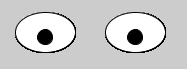
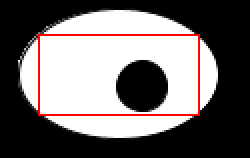

These eyes will watch the mouse as it moves around the screen.
1. Start a new sketch with setup() and draw() methods.
2. In the draw method, create eyeballs so that they eyes look like this:

3. Use mouseX and mouseY to move the left pupil when the mouse moves.
4. Now move the right pupil by setting it to mouseX + [some-distance]
5. Next, stop the pupils from going outside the eyes. To do this, imagine a rectangle that the pupil should stay within.
When mouseX or mouseY goes outside of these bounds, set it back to the boundary.
Put this code before you draw the ellipses.

6. OPTIONAL: Put a face behind the eyes. Load an image in the setup method like this:
PImage face = loadImage("face.jpeg");
image(face, 0, 0);